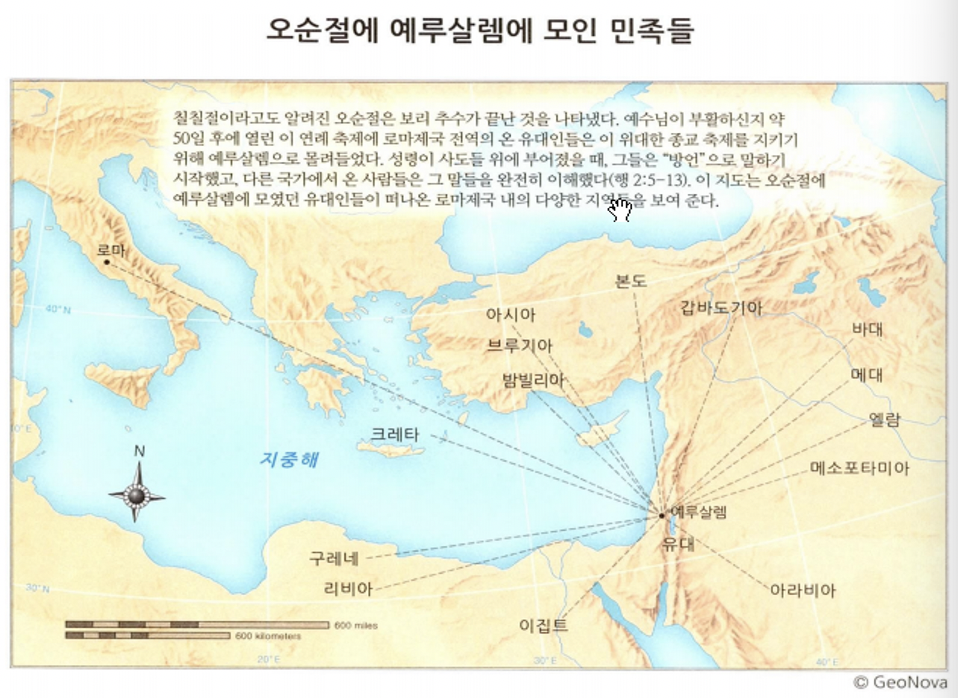
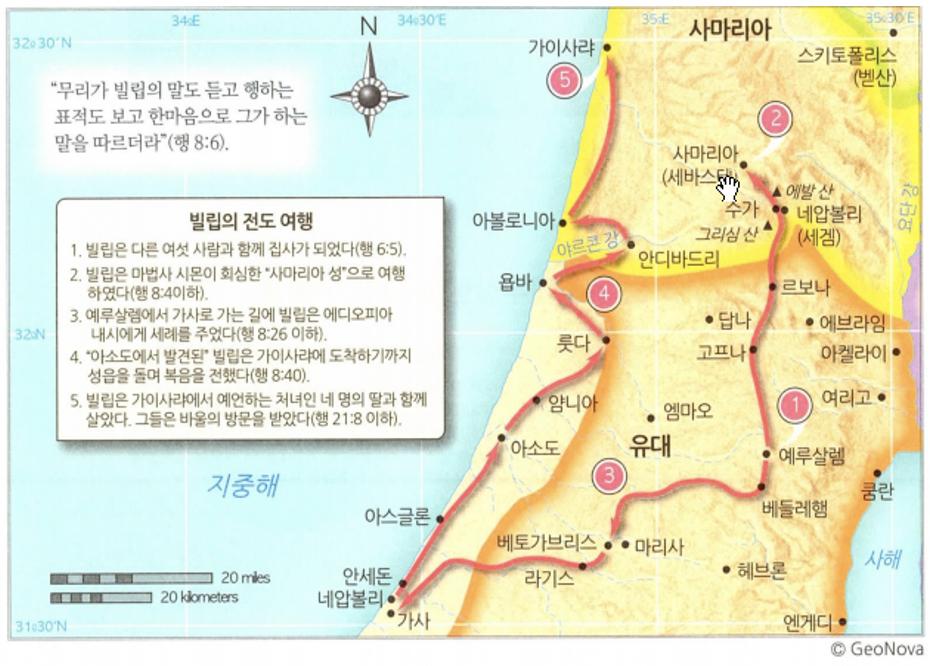
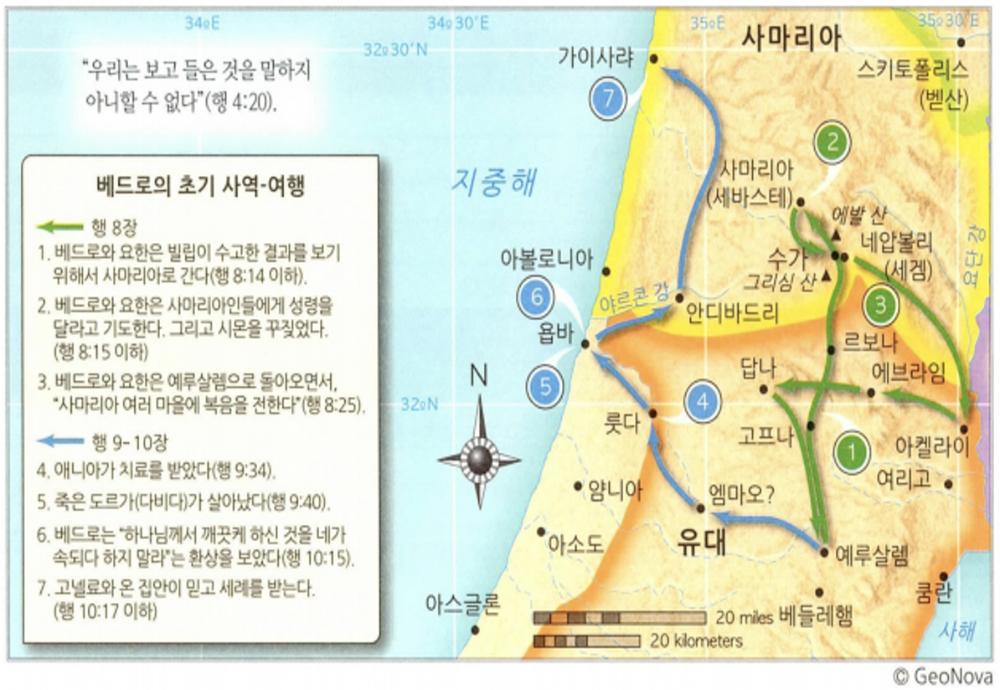
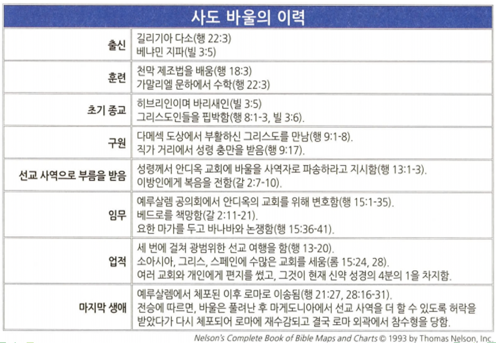

<!doctype html>
<html>
    <head>
        <meta charset="UTF-8">
        <meta name = "viewport" content = "width = device-width, initial-scale=1.0">
        <title>CF1 사도행전</title>
        <link rel="stylesheet" type="text/css" href="../../css/pages.css">
    </head>
</html>

<body>
    <header>
        <h3><a href = "../../index.html">HAGUS <br> HARDWARE</a></h3> 
        <ul id="main_menu">
        </ul>

        <script src = "../../MainMenu.js"></script>
    </header>

    <section class="section">
    <div id = "tag_menu">
    </div>

    <script src = "../../TIL_tag_menu.js"></script>

    <div id = "tag_list">
        <div class="l_title"><a href = "../../TIL.html">Class.</a></div><hr>
        <div class = "l_subtitle"><div class = "title"><a href = "../../TIL.html"><strong>[CF1] </div><div id="date">2021.06.08</div></strong></a></div>
             <!--====content====-->
        <div class = "content"> 
<pre>
    <span class="h">사도행전(역사서)</span>

    <strong>연대</strong> 60년대 초
    <strong>장소</strong> 로마
    <strong>수신</strong> 데오빌로
    <strong>목적</strong> 초대교회가 유대교의 한 분파에서 세계적인 운동으로 확장되는 것을 보여주는 기독교 신앙을 옹호한다. 
    <strong>주제</strong> 구속사, 초대교회의 탄생과 사역
    <strong>핵심요절</strong> [사도행전 1:8] 오직 성령이 너희에게 임하시면 너희가 권능을 받고 예루살렘과 온 유대와 사마리아와 땅 끝까지 이르러 내 증인이 되리라 하시니라. 
   
    <hr>
    <span class="h">사도행전의 특징</span>
   
    누가복음은 예수님이 예루살렘으로 가는 것을 강조. 
    1. 사도행전은 사도들이 예루살렘에서부터 땅 끝까지 향하는 선교와 전도를 강조한다. 
   
    누가복음이 "성령의 역사"를 강조하였듯이
    2. 사도행전도 "성령행전"이라는 별칭을 가질 정도로 성령의 일하심에 대한 역사의 기록이다. 복음 확장의 주체는 성령이시며, 복음 증거자들도 "성령충만" 해야 한다. 
   
    3. 약 20개의 설교를 통해서 성도의 신앙을 증진하고자 함
   
    <hr>
    <span class="h">사도행전의 구조</span>
   
    1. 지리적 구분
    예루살렘(1-7장) - 유대와 사마리아(8-11장) - 로마(11-28장)
   
    2. 인물중심 구분
    베드로 행전(2-12장) - 스데반, 빌립 - 바울행전(13-28장)
   
    3. 복음전파와 교회의 형성
    6:7, 9:31, 12:24, 16:5, 19:20, 28:31
   
    <hr>
    <span class="h">사도행전의 주요 내용</span>
   
    1. 사도직의 재정비 : 가룟 유다 -> 맛디아
    2. 오순절 성령의 강림 : 교회의 보편성과 세계 선교 지향
    3. 일곱 집사의 선택 (봉사와 섬김) & 사도 (기도와 말씀)
    4. 사마리아 복음화 : 복음의 이방 지역 전파 시작
    5. 바울의 회심 (9장 1-19절)
    6. 첫 이방인 고넬료의 회심과 베드로 (10장)
    7. 예루살렘 회의(15장) : 구원은 오직 그리스도를 통한 믿음과 은혜로, 이방인에게는 우상숭배, 음란, 자살, 피를 멀리 할 것 외에는 율법으로부터 자유로움
    8. 바울의 전도여행과 로마 입성
   
    <hr>
    
    
    
    
    
</pre>  
    <br>
    <br>
    <br>
    </div> 

    </div>

</section>

    
</body>


